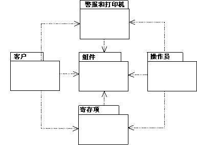

| 指南：设计中的导入依赖关系 |
 |
|
关系
| 相关元素 |
|---|
主要描述
说明处理包之间的导入依赖关系是构建对象模型的一个重要方面。如果某个包的任何类有可以追溯到另一个包中的类的关系，则该包依赖于另一个包。要表示这样的依赖关系，可使用从某个包到它依赖的包的导入依赖关系。  使用导入依赖关系来表达包之间的依赖关系。 使用使用以下方法发展导入依赖关系：
示例 假设您发现“回收机器”中的类客户面板和操作员面板的某些公共部分。将这些公共服务指定到一个新的类面板，并将其放在一个新的包面板集合中。然后另两个类可以引用该类以使用公共服务。 因为这些类属于两个单独的包，所以这两个包将依赖于新包。这样消除冗余表示只需要在一个地方就可以完成对公共功能的更改。 |
© Copyright IBM Corp. 1987, 2006. All Rights Reserved. |